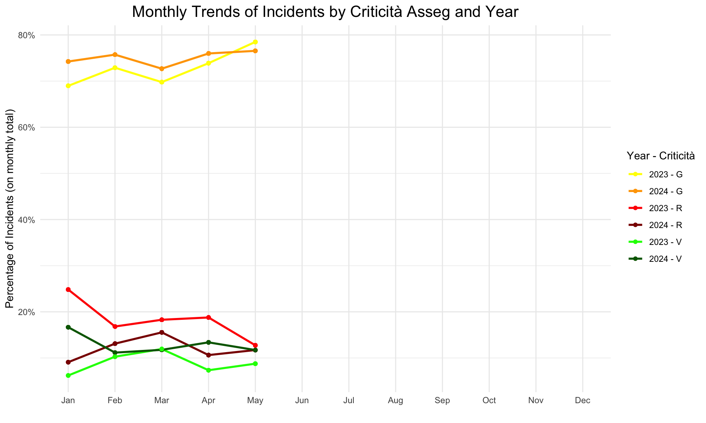
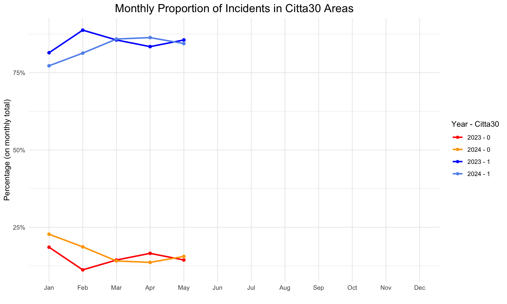

Grafico sulla gravita degli incidenti
Ad un primo sguardo sembrano scendere i codici rossi ed aumentare i codici gialli dopo 2 mesi dall’introduzione di “Bologna citta 30”
number of incidents
The number of incidents seems to be approximately the same

number of incidents in percentage
The number of red codes decreases and it increases the number of green code

Ad un primo sguardo gli incidenti sembrano essere nelle stesse aree
- 0 indica zone che non sono in citta 30
- 1 indica zone che sono in citta 30
La proporzione degli incidenti e 80 / 20 per le zone che oggi sono in citta 30C
